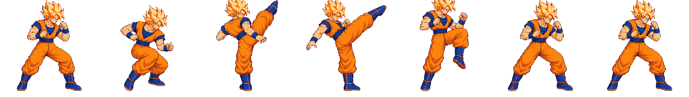
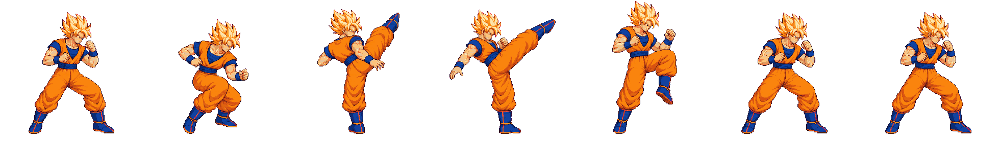
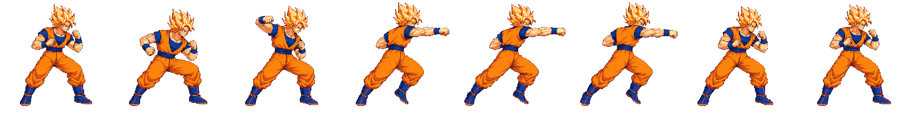
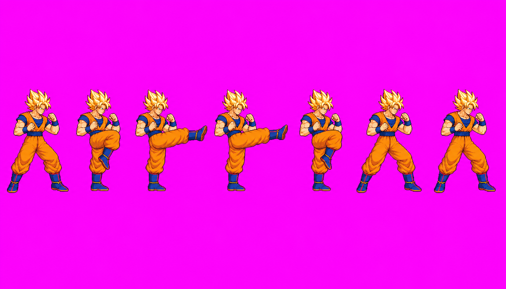

These decisions are separate. Heavy v14 remains user-approved via Claude relay #10 ("Approved"). Relay #11 authorized one light3 call only; it did not approve the image. Light3 v13 passed Astra’s exact 108-frame atlas audit at x1; user drawing approval is pending.
Review request: approve Goku light3 v13
Identity: face, hair, orange gi, blue clothing and boots match the approved references.
Proportions and pose: compact stomach-height front kick with chamber, two extensions, bent-knee retraction and guard recovery; anatomy is consistent within stated measurement uncertainty.
Technical: exact 108-frame strict 48-color atlas PASS at x1 with zero retained-frame alpha differences; top margin is narrow but there is no clipping. Existing getup grounding/contact warning remains separate for Claude.
Technical PASS is not drawing approval. Please review the light3 v13 candidate above.
Native candidate player
Exact quantized candidate cell
Nearest-neighbor enlargement
Light3 v13 is the new compact stomach-height front-kick sequence; heavy v14 remains the approved reference candidate. Timed playback follows the recorded durations; both are one-shots.
Approved identity and scale references
These are the approved reference images used for identity and anatomy. Reference approval does not approve the animation candidates below.
Light3 v11 remains technically held and excluded from the actual atlas. At its then-supported .62 density the 256px diagnostic clipped 800 foreground-mask pixels; the 280px companion preserved the complete drawing. This is historical evidence only and does not describe v13 above.


Heavy candidate at native size
Heavy v14 is shown at uniform 0.720 density and native bodyHeight 235. The exact final audit passed all eight poses at x1; tallest top is y=5, with no clipped foreground-mask pixels. User approved heavy v14 via Claude relay #10 on 2026-10-16 ("Approved").

Actual branch atlas after exact final audit
This actual branch atlas contains 23 animations / 108 frames. Astra passed the exact 48-color pixels; light3 v13 is technically included at x1, but user drawing approval remains pending. Heavy v14 remains user-approved via relay #10.
Sheet SHA256 ebb27850371179a0fdc9da5d76816ebdb52b747712643b60cd40e14bfe6460ca · metadata SHA256 b43af90a609dc0a36e688bad916c50694962ce2fced6fb02384cd400bcd814ca · all 108 frames at x1, 48 colors.
Exact final-atlas cell
Nearest-neighbor enlargement
The player below reads the exact audited branch public sheet and anims.json. Light3 v13 is technically included; drawing approval remains pending.
Source and QA evidence
Measured source screen, original source images, factors, and exact hashes
The primary light3 v13 and heavy v14 players above use exact cells extracted from the audited public atlas, not the earlier standalone diagnostic strips. Relay11 generated light3 v12 source at 1659 × 948 (SHA-256 C2320840541EF2B9A9EBD5919F632BF40F733092CE2C2DDCD54F37467447DCB1); the exact source is shown here. Its v13 assembly SHA-256 is 3A55C5C25E389C6336A3938EF9716929EEEA7D6A90B7D834FAF0ED06A701CBC8 at uniform factor .696133442603862. Attempt receipt and prompt/reference hashes: art/characters/goku/production/relay11-generation/light3_v12_call_receipt.json. Candidate and final audit: art/characters/goku/production/manual-audit-r5/CANDIDATE_AUDIT.md and FINAL_ATLAS_AUDIT.md.
Relay11 light3 v12 source

Historical relay9 sources and diagnostics (not the current player)
These source sheets and assembly/audit files document prior versions only. They are not the exact current atlas cells.
Foreground components were identified with 8-connected labeling after excluding the flat magenta background. The exact component masks, not overlapping rectangular crop boundaries, own the pixels in each assembled frame. The light3 256px diagnostic clipping counts are f0=1, f1=82, f2=0, f3=33, f4=680, f5=2, f6=2. The roomy companion has zero clipped foreground-mask pixels in every frame.
Both diagnostic strips and the roomy companion were keyed with the packer’s character background helper and quantized jointly with its median-cut 48-color helper. They are isolated fixtures, not packed public atlas output.